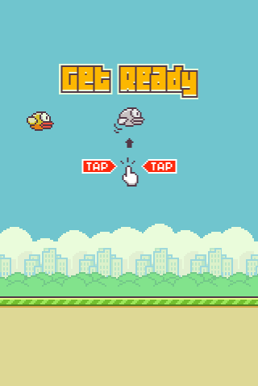

Igro sem sprogramiral z pomočjo youtube tutorila.Uporabljal sem Java script ker se mi je zdel še najbol enostaven. Med izdelavo igre sm se tudi veliko naučil. Za igro sem uporabil način koordinat. uporabil pa sm tudi funkcijo collapse.Za predmete sem uporabil sprite sliko na kateri sm s pomočjo koordinatov jih dal prislika na zaslon.
Razlago si ogledate tukaj.